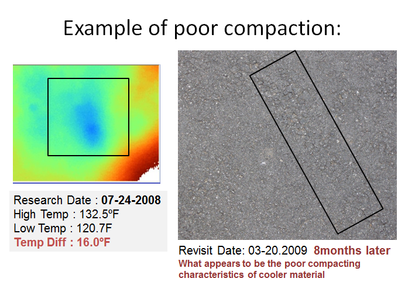

others
-
Zheng, K., Cho, Y., Zhuang, Z., and Li, H. (2013). "Optimization of the Hybrid Energy Harvest Systems Sizing for Net Zero Site Energy Houses." ASCE Journal of Architectural Engineering, Volume 19, Issue 3, September 2013, DOI: 10.1061/(ASCE)AE.1943-5568.0000109 [Full text]
-
Neal, J., N., Schwer, A., Tiller, D., Cory, B., Barry, N., Berryman, C., Shen, Z., Shi, J., Cho, Y., Stansbury,J., Li , H., Lau,E., Zhang,T., and Alahmad, M. (2012). “Analysis of Components in a Zero Net Energy Test House (ZNETH) in Omaha Nebraska.” The International Journal of the Constructed Environment, Volume 2, Issue 1, Pages 37-50, [Link] [Full text]
-
Hemsath, T., Goedert, J., Schwer, A., and Cho, Y. (2011). "Zero Net Energy Test House," Journal of Green Building, Volume 6, Issue 2, Spring 2011, Pages 36-48, DOI: 10.3992/jgb.6.2.36 [Full text]
-
Kabassi, K., Cho, Y. (2011). “BLCC Analysis derived from BIM and energy data of Zero Net Energy Test Home.” ASCE, International Conference on Sustainable Design and Construction in Kansas City, MO, DOI: 10.1061/41204(426)37 [Full text]
-
Zheng, K., Zhuang, Z., Bode, T., Cho, Y., and Li H. (2011). “Optimization of the Hybrid Energy Harvest Systems Sizing for Zero or Zero Net Energy Houses.” ASCE, International Conference on Sustainable Design and Construction in Kansas City, MO, DOI: 10.1061/41204(426)35 [Full text]
-
Cho, Y., Morcous, G., and Kabassi, K. (2010). “BIM-driven Economic Analysis for Zero Net Energy Test Home.” 27th International Conference-Applications of IT in the AEC industry, Cairo, Egypt, 16-18 Nov. [Full text]
-
Cho, Y., Alaskar, S., and Bode, T. (2010). “BIM-Integrated Sustainable Material and Renewable Energy Simulation.” ASCE, Construction Research Congress (CRC) 2010 conference in Banff, Alberta, Canada, pp.288-297, DOI: 10.1061/41109(373)29 [Full text]
-
Cho, Y., Bode, T., and Alaskal, S. (2009). “BIM-DRIVEN ENERGY ANALYSIS FOR ZERO NET ENERGY TEST HOME (ZNETH).” 3rd International Conference on Construction Engineering and Management and 6th International Conference on Construction Project Management, Jeju, Korea, May 27-30, pp. S4-3. [Link] [Full text]
- Cho, Y., Xu, Q., and Wang, C. (2013). “Advanced Cleaning Device to Remove Debris and Chemicals for Crack/Joint Sealing.” The Transportation Research Board (TRB) 92nd Annual Meeting, January 13-17, Washington, D.C. [Link]
- Cho, Y., Bode, T., Wiek, D., and Wang, C. (2012). “Cleaning Device to Remove Debris and Chemicals for Crack/Joint Sealing.”The Transportation Research Board (TRB) 91st Annual Meeting, January 22-26, Washington, D.C. [Link]
- Cho, Y., Wiek, D., and Wang, C. (2012). “Cleaning Device to Remove Debris and Chemicals for Crack/Joint Sealing.” 66th Iowa County Engineers Conference, December 4-6, Iowa State University, Ames, Iowa. [Page 1] [Page 2]
- 2012, a non-provisional patent: pending, “Advanced Cleaning Device to Remove Debris and Deicing Chemicals for Crack/Joint Sealing for Pavement”
- Cho, Y., Xu, Q., and Wang, C. (2013). “Advanced Cleaning Device to Remove Debris and Chemicals for Crack/Joint Sealing.” The Transportation Research Board (TRB) 92nd Annual Meeting, January 13-17, Washington, D.C. [Link]
- Cho, Y., Bode, T., Wiek, D., and Wang, C. (2012). “Cleaning Device to Remove Debris and Chemicals for Crack/Joint Sealing.”The Transportation Research Board (TRB) 91st Annual Meeting, January 22-26, Washington, D.C. [Link]
- Cho, Y., Wiek, D., and Wang, C. (2012). “Cleaning Device to Remove Debris and Chemicals for Crack/Joint Sealing.” 66th Iowa County Engineers Conference, December 4-6, Iowa State University, Ames, Iowa. [Page 1] [Page 2]
- 2012, a non-provisional patent: pending, “Advanced Cleaning Device to Remove Debris and Deicing Chemicals for Crack/Joint Sealing for Pavement”
- Cho, Y., Wiek, D., and Wang, C. (2012). “Cleaning Device to Remove Debris and Chemicals for Crack/Joint Sealing.” 66th Iowa County Engineers Conference, December 4-6, Iowa State University, Ames, Iowa. [Page 1] [Page 2]
- 2012, a non-provisional patent: pending, “Advanced Cleaning Device to Remove Debris and Deicing Chemicals for Crack/Joint Sealing for Pavement”
- Cho, Y., Kabassi, K., Wang, C. (2012). " Framework of Non-Nuclear Methods Evaluationfor Soil QC and QA in Highway Pavement Construction." Journal of Construction Engineering and Project Management, Volume 2, No.2, June 2012, Pages 45-52, DOI: 10.6106/JCEPM.2012.2.2.045 [Full text]
Journals:
- Cho,Y., Wang, C., and Zhuang, Z. (2013)."Framework of Empirical Process for Improving Non-nuclear Gauge Performance in HMA Pavement Construction." ASCE Journal of Construction Engineering and Management, Volume 139, Issue 6, June 2013, Pages 601-610, DOI: 10.1061/(ASCE)CO.1943-7862.0000638 [Full text]
- Kabassi, K., Im, H., Bode, T., Zhuang, Z., and Cho, Y. (2011). “Non-Nuclear Method for HMA density measurements.” Associated Schools of Construction (ASC) 47th Annual International Conference in Omaha, NE. [Link] [Full text]

Journals:
- Cho, Y., Kabassi, K., Pyeon, J., Choi, K., Wang, C., and Norton, T. (2013). "Effectiveness Study for Temporary Pavement Markings Removal Methods in Roadway Construction Zones." ASCE Journal of Construction Engineering and Management, Volume 139, Issue 3, March 2013, Pages 257-266, DOI: 10.1061/(ASCE)CO.1943-7862.0000608 [Full text]

Journals:
- Cho, Y., Bode, T., Song, J., and Jeong, J.(2012). “Thermography-Driven Distress Prediction from Hot Mix Asphalt Road Paving Construction.” ASCE Journal of Construction Engineering and Management, Volume 138, Issue 2, February 2012, Pages 206-214, DOI: 10.1061/(ASCE)CO.1943-7862.0000395 [Full text]
- Bode, T. and Cho, Y.(2010). “Framework for Web-based Highway Construction Geospatial Data Management.” ASCE, Construction Research Congress (CRC) 2010 conference in Banff, Alberta, Canada, pp.288-297. DOI: 10.1061/41109(373)61 [Full text]
- Cho, Y., Bode, T., and Kim, Y.R.(2009). “Advanced Quality Control Methods for Road Paving Construction by Utilizing Sensory Devices.” ASCE, 2009 Construction Research Congress (CRC) conference in Seattle WA, April 4-7. pp. 516-525, DOI: 10.1061/41020(339)53 [Full text]